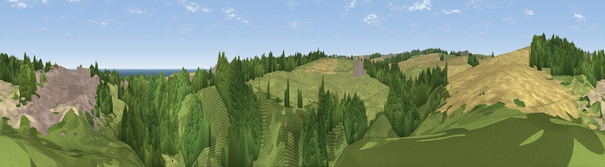

Cherry Knowle Hill
#45350 in England · top 95% of its area beats it · near Seaham · access?Where it is
The exact computed spot (NZ 40280 51655). Click the marker for map links.
Public access: no public right of way or access land is recorded at this exact spot — it may be on private land. Computed from Natural England's CRoW access layer and OpenStreetMap rights of way — not the legal definitive map. Always verify locally.
The view, rendered

A 360° render of this exact spot computed from the terrain model, tree cover and land cover — summer colours, afternoon light, calibrated against photographs of famous viewpoints. Real trees, hedges and buildings will differ in detail.
The panorama
Grey silhouette: terrain skyline in each direction (720 bearings, Earth curvature and refraction included). Dashed green: skyline with trees (+15 m) and buildings (+8 m) as obstacles. Blue strip: how far the ground is visible on each bearing.
Where the view opens
Wedge length = distance to the farthest visible ground on that bearing (vegetation-aware). Rings at 10, 25 and 50 km.
What fills the view
62% woodland · 27% grassland · 6% built-up · 3% cropland ·
Angular shares of the visible panorama (visual magnitude), not map area. Landscape diversity 0.44 (0–1 Shannon).
Key numbers
More beautiful places nearby
The staircase of upgrades: each row has a higher view potential than everything closer. Driving times are estimates from straight-line distance, calibrated against real road routing — check an actual route before setting out.
| Place | Direction | Drive | Score |
|---|---|---|---|
| Mill Hill | N · 1 km | ~3 min | 53.9 |
| Viewpoint near Houghton-le-Spring | WSW · 3 km | ~7 min | 76.0 |
| Viewpoint near Sunniside | WNW · 19 km | ~33 min | 77.6 |
| Pontop Pike | W · 25 km | ~41 min | 77.8 |
| Viewpoint near Lazenby | SSE · 37 km | ~56 min | 86.4 |
| Warsett Hill | SE · 42 km | ~61 min | 86.8 |
| Viewpoint near Easington | SE · 46 km | ~67 min | 90.2 |
| The Knoll | S · 472 km | ~437 min | 91.0 |
54.85807, -1.37407 · source: osm peak · position refined by local search. Computed location — check access rights before visiting.